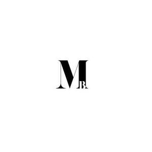

Trade Mark Journal No.2025/048 28 November 2025
UK00004296410 18 November 2025 (3,18,21,35,44)

- Class 3
- Facial cleansers; Skin toners; Face creams; Moisturising creams; Facial oils; Facial lotion; Clay skin masks; Face masks; Cleaning masks for the face; Facial masks; Exfoliating scrubs for the face; Facial scrubs; Eye creams; Eye lotions; Cosmetic creams for the skin; Lip balms; Non-medicated lip balms; Lip cosmetics; Sunscreen lotions; Suncare lotions; Sunscreen; Cosmetics for the treatment of dry skin; Acne cleansers, cosmetic; Cosmetic products in the form of aerosols for skin care; Anti-ageing creams; Anti-aging creams; Anti-wrinkle creams; Anti-ageing creams [for cosmetic use]; Anti-aging creams [for cosmetic use]; Skin lighteners; Colour cosmetics for the skin; Moisturising skin creams [cosmetic]; Skin lightening creams; Skin whitening creams; Facial moisturizers; Facial lotions; Skin cleaning and freshening sprays; Night creams; Day creams; Skin balms [cosmetic]; Moisturising skin lotions [cosmetic]; Body lotions; Body and facial butters; Exfoliating scrubs for the body; Body scrubs; Exfoliating body scrub; Cuticle oils; Hand creams; Hand oils (Non-medicated -); Hand lotions; Cosmetic hand creams; Bath and shower gels; Body oils; Moisturisers; Moisturizers; Moisturisers [cosmetics]; Make-up foundations; Skin moisturisers; Cosmetic moisturisers; Cream foundation; Concealers; Eye concealers; Concealers for spots and blemishes; Makeup setting sprays; Perfumed powders; Soap powders; Blushers; Eyeshadows; Blusher; Eyeliners; Eye brightening correctors; Make-up palettes containing cosmetics; Eyeshadow; Eyeshadow palettes; Mascara; Mascaras; Hair mascara; Eyebrow colors in the form of pencils and powders; Eyebrow pencils; Pencils (Eyebrow -); Eyebrow gel; Eyebrow powder; Eyeliner pencils; Cosmetic pencils for cheeks; Make-up pencils; Lip pencils; Lip glosses; Lip liners; Lip gloss palettes; Lip liner; Lip gloss; Lip balm; Lip makeup; Lip tints; Make-up removers; Cleansing lotions; Cleansing creams; Cleansing balm; Cleansing creams [cosmetic]; Cosmetic kits; Kits (Cosmetic -); Make-up kits.
- Class 18
- Makeup bags; Make-up bags; Cosmetic bags; Make-up boxes; Cosmetic purses; Toiletry bags.
- Class 21
- Make-up brushes; Cosmetics brushes; Eyeliner brushes; Mascara brushes; Applicators for cosmetics; Cosmetics applicators; Eye make-up applicators; Make-up sponges; Cosmetic sponges; Sponges; Facial cleansing sponges; Skin cleansing brushes; Scrubbing brushes; Brushes for cleaning; Cleaning brushes; Exfoliating brushes; Brushes.
- Class 35
- Online retail store services relating to cosmetic and beauty products; Online retail services relating to cosmetics; Retail services connected with the sale of subscription boxes containing cosmetics.
- Class 44
- Skin care salon services; Cosmetic facial and body treatment services; Cosmetic treatment services for the body, face and hair; Facial beauty treatment services; Services for the care of the skin; Beauty therapy treatments; Light therapy services; Microneedling treatment services; Microdermabrasion services; Consultation services relating to skin care; Cosmetic analysis; Make-up consultation and application services; Cosmetic treatment; Injectable filler treatments for cosmetic purposes; Cosmetic treatment for the body; Beauty treatment; Surgery (Cosmetic -).
MAE BEAUTY LTD
Representative: Thomas Marinus Simon Venneker